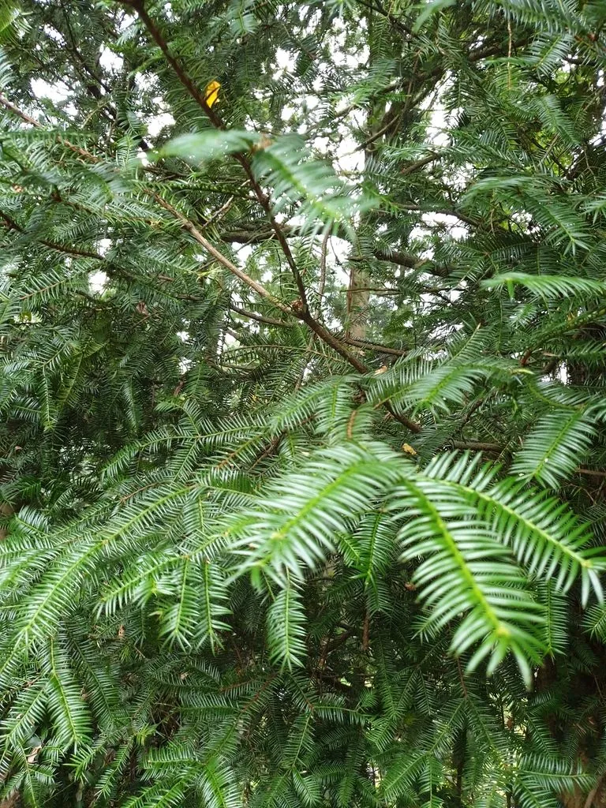

蕨类与裸子植物 · 植物界
日本榧 Torreya nucifera

日本榧是红豆杉科的常绿乔木，种子可食，木材优良，在日本有悠久的栽培历史，是兼具食用与用材价值的树种。
- 分类
- 门裸子植物门纲松纲目柏目科红豆杉科属榧属
- 栖息环境
- 温暖湿润的山地林下与庭院，喜半阴、深厚肥沃土壤
- 地理分布
- 原产日本，中国有引种栽培
- 保护级别
- 暂无评估；野生资源需保护
物种志
日本榧是红豆杉科榧属常绿乔木，高可达 25 m，树皮灰褐色、纵裂。叶片条形、坚硬，长 2–3 cm，螺旋状排列成两列，表面深绿色，叶背有两条气孔带。雌雄异株，雄球花单生叶腋，雌球花成对生于枝顶。种子核果状，椭圆形，外被肉质假种皮，成熟时紫褐色。
日本榧原产日本，中国有引种栽培，喜温暖湿润、半阴环境，耐寒性较强，适宜在深厚肥沃、排水良好的土壤中生长。它生长缓慢、寿命长，种子炒熟后香脆可食，是日本传统干果；木材纹理直、材质优良，可供建筑、家具与器具，也是制作围棋棋盘的优质用材。日本榧树姿优美、四季常绿，也可作园林树种。栽培时需注意雌雄株搭配，才能正常结实。
形态与习性
- 树高可达 25 m
- 叶条形坚硬，排成两列
- 种子核果状，可炒食
- 木材纹理直，可作棋盘与家具
- 习性生长缓慢，雌雄异株
趣味知识
- 日本榧的种子炒熟后香脆可口，是日本传统干果。
- 它的木材纹理直、材质优良，是制作围棋盘的好材料。
- 日本榧雌雄异株，栽培时要搭配雄株才能结果。